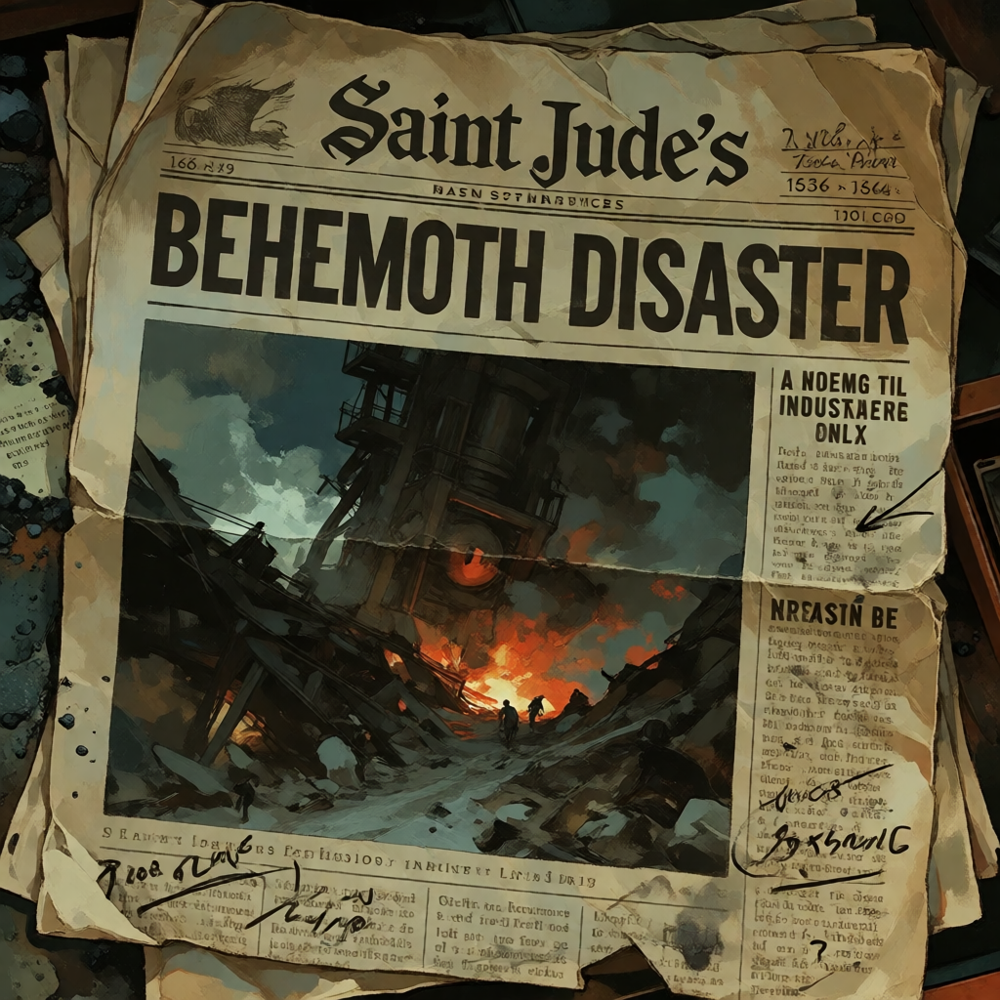
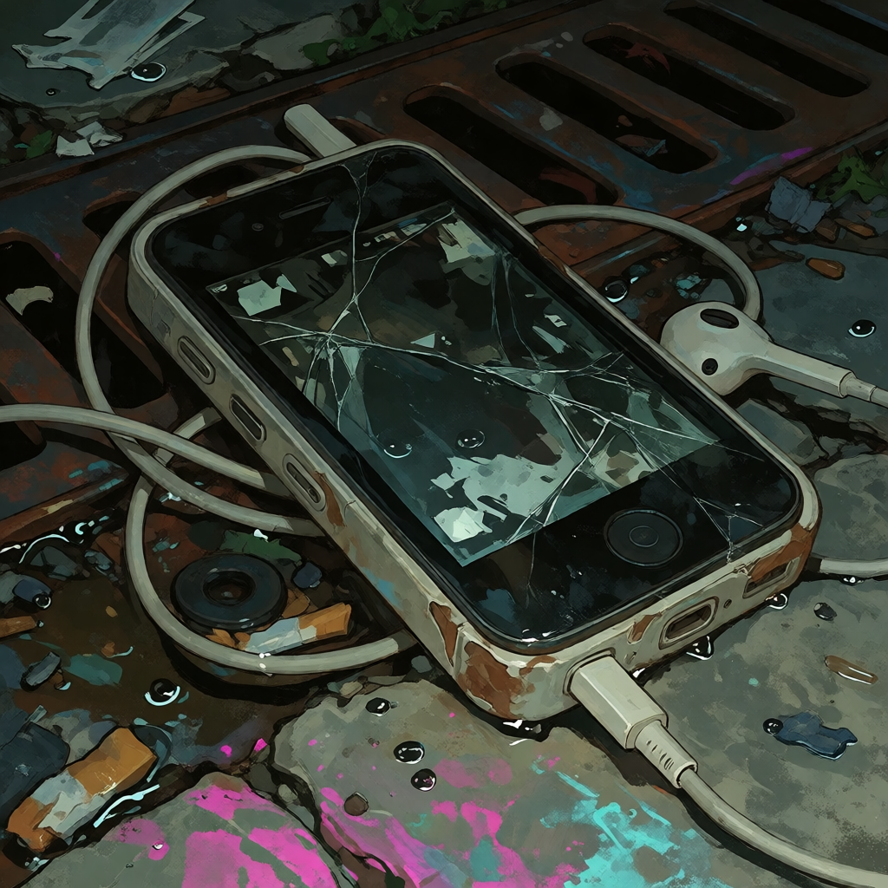
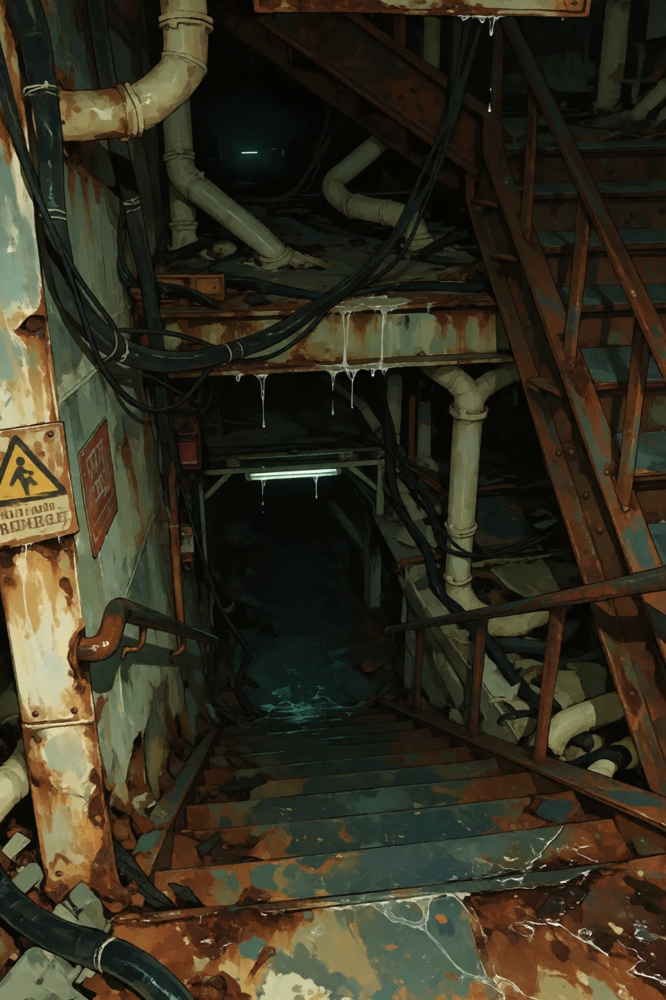
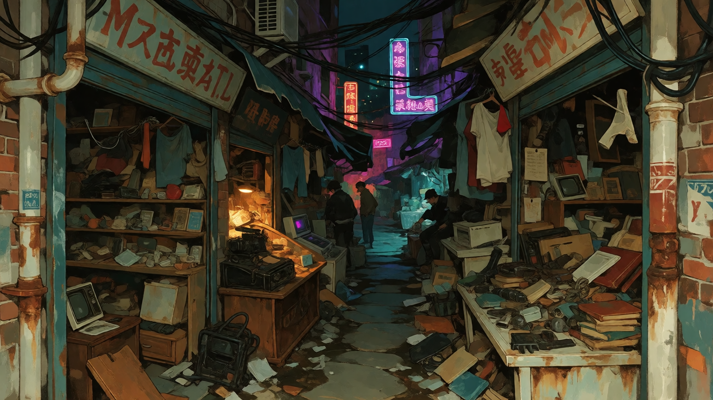

SHOP / 002
FIX IT.
Broken electronics, old appliances, machinery and household objects pass through repair shops every day. If it can be repaired, somebody will probably try.

VELVET / INTERNAL ENCLAVE
A cramped commercial enclave built into the old bones of Velvet. Shops, apartments, storage rooms, repair businesses, collectors, salvage dealers, secondhand stores and enough accumulated shit to make throwing anything away basically impossible.
MOTHBALL IS NOT A DISTRICT.
IT IS INSIDE VELVET.
LOCATION / VELVET
Mothball grew inside Velvet rather than beside it.
Storefronts occupied old ground floors. Apartments got divided. Basements became storage. Storage became shops. Shops expanded into hallways. Somebody put a staircase somewhere and twenty years later nobody remembered what used to be there.
The enclave became known for secondhand commerce, salvage, repair, curios, collectors and the general movement of objects from one person's hands into another person's hands.
IF SOMEBODY DOESN'T WANT IT,
SOMEBODY IN MOTHBALL PROBABLY DOES.

OFF THE MAIN STREET
The main streets are crowded enough.
The side streets get worse.
Delivery entrances. Fire escapes. Back doors. Overflow inventory. Garbage. Laundry. People carrying furniture through spaces that clearly were not designed for furniture.
Businesses often have entrances that don't face the street at all.

MOTHBALL / COMMERCE
This is not a curated vintage district.
People are selling shit.

Furniture. Clothing. Jewelry. Books. Tools. Appliances. Machinery. Religious objects. Family heirlooms. Industrial components. Stolen goods. Broken things. Fixed things. Things somebody's grandmother owned.
There is no meaningful boundary between antique dealer, thrift store, salvage yard and junk shop here.
PRICE TAGS ARE NEGOTIABLE.
SO ARE SOME OF THE OBJECTS.
Broken electronics, old appliances, machinery and household objects pass through repair shops every day. If it can be repaired, somebody will probably try.

Collectors maintain rooms full of objects nobody else thought were worth keeping. Some collections are beautiful. Some are disturbing. Most are both.

MARKET TABLE / UNCATALOGUED
You don't know what it is.
The seller doesn't know what it is.
The person who owned it before them definitely didn't know what it was.
Three dollars.
SOLD.

ABOVE THE SHOPS
The buildings aren't just businesses.
Families live upstairs. People rent rooms. Kids grow up above storefronts. Laundry hangs over alleys. Somebody's television is always audible through a wall.
Inventory gets stored in hallways because there isn't anywhere else to put it.
The boundary between someone's home and someone's workplace can get extremely fucking theoretical.
THE CENTRAL PRINCIPLE
Mothball runs on the assumption that almost everything has another use.
Or another owner.
Or another story.
Sometimes the object is valuable. Sometimes it is useful. Sometimes it is ugly as sin and somebody wants it anyway.
Sometimes nobody knows where it came from.


SPECIALTY GOODS
Behemoth-derived materials move through Mothball like everything else.
Bone. Teeth. Hide. Blood-derived products. Components. Objects made from things that used to be alive in ways nobody can properly explain.
In Nine, the material is industrial.
Here, somebody put a price tag on it.

DIRECTIONS
Mothball's signage is often more useful than the city's maps.
Arrows point toward businesses above, below, behind and occasionally somewhere that seems physically impossible.
ASK SOMEBODY WHO WORKS HERE.
OUTLIER / MOTHBALL
Doll is from Mothball.
She knows the shops, the shortcuts, the owners, the weird storage rooms, the places where you're allowed to touch things and the places where you absolutely fucking aren't.
Her battered embroidered handbag is as much a part of the enclave as anything else.
It contains useful objects.
Some of them are dynamite.
OPEN DOLL'S RECORD →

AFTER DARK
Not all of them.
Mothball stays active late because the people who live here still need to live here.
Somebody gets home from work. Somebody opens a late-night shop. Somebody drags a piece of furniture through an alley at midnight.
The old buildings glow from the inside.
MOTHBALL / BELOW STREET LEVEL
Storage spaces become basements.
Basements become older basements.
Some connect to foundations that predate the current building.
Some are simply too large.
Nobody in Mothball finds this particularly surprising.


RECORD / UNRESOLVED
Or maybe it was.
The problem with Mothball is that so much of it is already hidden behind merchandise, renovations, storage, additions and old architecture that nobody can reliably remember what a building looked like before somebody changed it.
RECORD STATUS: PENDING

BOUNDARY / VELVET
You don't cross a gate into Mothball.
The architecture just gets tighter.
The storefronts get closer together. The signs multiply. Upper floors become visible. Merchandise starts appearing outside. The expensive old architecture gets swallowed by commerce.
Then you're back in Velvet.
MOTHBALL IS INSIDE THE DISTRICT.
RETURN TO VELVET →



MOTHBALL
Maybe not today.
Maybe not to you.
But somebody kept it.
That's basically how Mothball happened.
